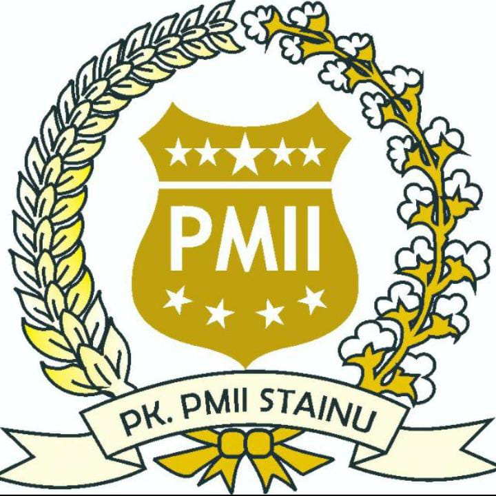
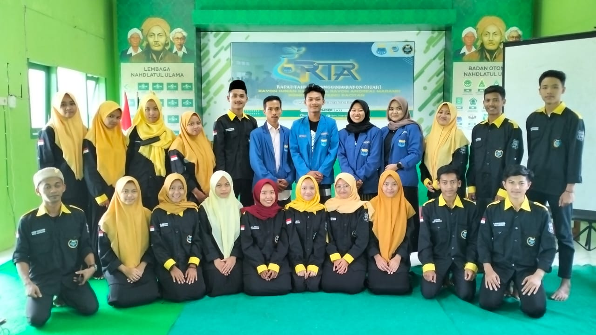

PMII
Komisariat STAI NU PACITAN
Pergerakan Mahasiswa Islam Indonesia atau disingkat PMII merupakan organisasi gerakan dan kaderisasi
yang berlandaskan islam ahlussunnah wal jamaah.
Berdiri sejak tanggal 17 April 1960 di Surabaya
dan hingga lebih dari setengah abad kini PMII terus eksis untuk memberikan kontribusi bagi kemajuan bangsa dan
negara.
Tujuan didirikannya PMII yaitu terbentuknya pribadi muslim Indonesia yang bertakwa kepada Allah SWT, berbudi luhur
berilmu, cakap dan bertanggungjawab dalam mengamalkan ilmunya serta komitmen memperjuangkan cita-cita kemerdekaan
Indonesia.
PMII Komisariat STAI NU Pacitan mempunyai Rayon Andreas Maramis yaitu Rayon Fakultas Ekonomi dan Rayon Tarbiyah
atau mempunyai nama lain Rayon Sunan Kalijaga.
PMII Komisariat STAI NU Pacitan diketuai oleh sahabat Gusval Wibowo, Rayon Andreas Maramis diketuai oleh sahabat
Muhammad Darwisy
sedangkan Rayon Sunan Kalijaga diketuai oleh Sahabati Ziaqul Hidayah. Selain itu juga didirikan Kopri (Korps
PMII putri) yang diketuai oleh sahabati Al Amin.

Pengurus Rayon PMII Komisariat STAI NU Pacitan menggelar Rapat Tahunan Anggota Rayon (RTAR)
Kegiatan ini bertempat di gedung Pengurus Cabang Nahdlatul Ulama' (PCNU) kabupaten Pacitan